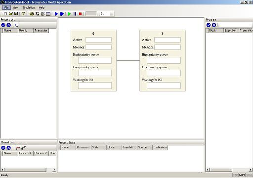
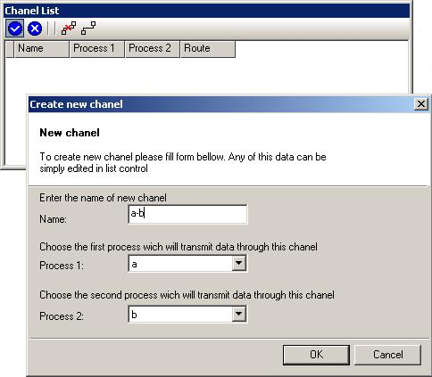
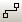
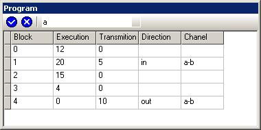
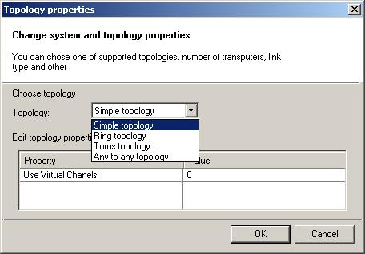

Transputer Model Aplication
Transputer Model Aplication предназначена для моделирования работы мультитранспьютерной системы.
Модель каждого транспьютера включает :
-- номер транспьютера;
-- Active - активный процесс, выполняющийся в данный момент на транспьютере;
-- Mamory - сотояние памяти транспьютера, процессы обменивающиеся данными через ОЗУ транспьютера;
-- High prioity queue - очередь ждущих процессов с высоким приоритетом;
-- Low prioity queue - очередь ждущих процессов с низким приоритетом;
-- Waiting for I/O - очередь процессов, готовх к передаче данных, ожидающих освобождения канала, либо готовности второго процесса, участвующего в передаче.

Рис. 5 - Основное окно.
В основном окне отображаются все транспьютеры системы, а также состояние погруженных на них процессов и каналов ввода/вывода.
Process List
Рис.6 - Process List Process List - список всех процессов, где Name - имя процесса, Priority - приоритет процесса, Transputer - номер транспьютера, на котором будет выполняться процесс.
При нажатии на левую верхнюю кнопку  в Process List, появится диалоговое окно создания нового процесса (Create
new process ). Все введенные данные в последствии можно будет редактировать
в списке процессов. Кнопка
в Process List, появится диалоговое окно создания нового процесса (Create
new process ). Все введенные данные в последствии можно будет редактировать
в списке процессов. Кнопка  используется для удаления выбранного процесса, а также его программы. При нажатии
на кнопку в окне Program
будет отображена программа выбранного процесса.
используется для удаления выбранного процесса, а также его программы. При нажатии
на кнопку в окне Program
будет отображена программа выбранного процесса.
Chanel List

Рис.7 - Chanel List Chanel List - список всех определенных каналов, где имя канала между Process 1 и Process 2. Route -маршрут, который пользователь может определить на свое усмотрение.
В программе предусмотрены также маршруты по умолчанию, при нажатии на кнопку - для всех каналов будут созданы маршруты по умолчанию, за исключением тех каналов, в которых и так прописан ликвидный маршрут. Кнопка используется для удаления всех маршрутов по умолчанию.
Program
Для каждого процесса определяется своя программа. Программа состоит из так называемых блоков. В каждом блоке может быть - n-e количество тактов счета и n-e количество тактов передачи. При этом, в блоке определяется канал по которому будет осуществляться передача, а также и направление (in/out). Блоки с с нулевым временем счета и передачи не допустимы.

Рис.7 - Program.
Process State

Рис.7 - Process State.
В окне Process State отображается информация о каждом из процессов: - имя процесса; - процессор на котором он выполняется; - Текущее состояние; - Блок, до которого дошла программа; - Количество невыполненных тактов
Topology Properties
В программе предусмотрены 4 топологии Simple topology - самый простой случай, соединены между собой 2 транспьютера. Ring topology - "кольцо", каждый транспьютер соединен с 2-мя соседними. Torus topology - тор размером n*m. Any to any topology - топология предусматривает, что транспьютеры соединены по топологи Ring и один из оставшихся 2-х свободных каналов транспьютера через сеть коммутаторов доступен всем остальным.

Рис. 8 - Topology Properties
Для использования виртуального канало поле Use Virtual Chanels должно быть установлено в "1", для оключения виртуальных каналов - "0" . Остальные значения не допустимы.